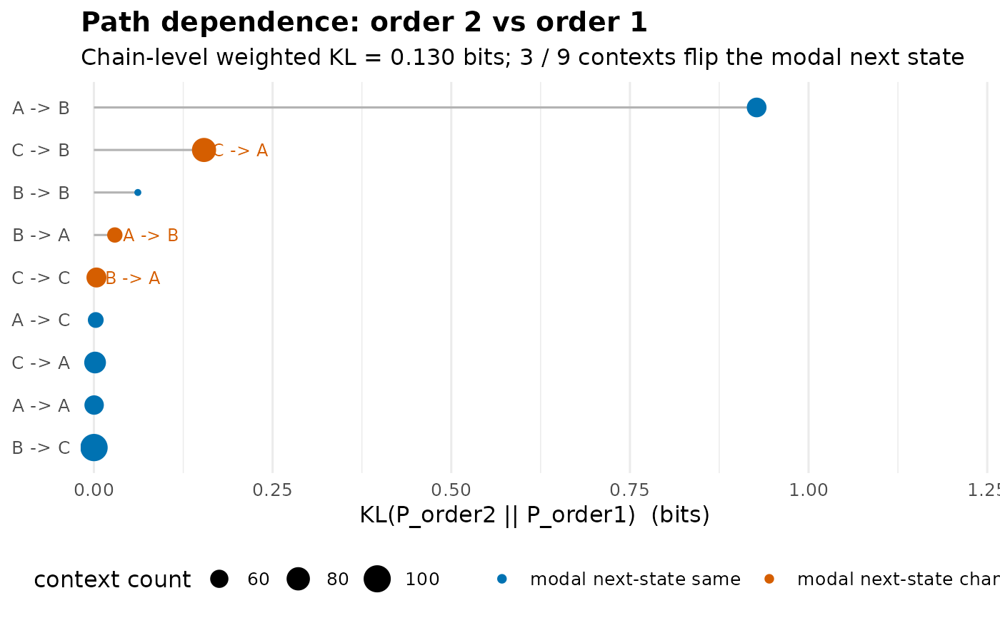

Diagnoses where a chain's order-1 Markov assumption fails by comparing, for each order-k context \((s_1, \ldots, s_{k-1})\), the empirical next-state distribution \(P(s_k \mid s_1, \ldots, s_{k-1})\) against the order-1 prediction \(P(s_k \mid s_{k-1})\) that uses only the most recent state. Returns a tidy per-context table sorted by Kullback-Leibler divergence so the analyst can see exactly which histories carry extra predictive information.
Arguments
- x
A wide sequence data.frame / matrix (rows = actors, columns = time-steps), or a
netobjectthat carries the source data.- order
Integer. Order of the conditioning context.
order = 2(default) compares 2-step memory against 1-step;order = 3compares 3-step memory; etc. Must be a whole number; a non-integer value is an error rather than being silently truncated.- min_count
Integer. Drop contexts seen fewer than this many times. Default 5. Very small samples produce noisy KL estimates.
- base
Numeric. Logarithm base for entropy and KL. Default 2 (bits).
Value
An object of class "net_path_dependence" with
- contexts
tidy data.frame, one row per order-k context, sorted by KL descending. Columns:
context(e.g. "A -> B"),n(count),H_order1(entropy of \(P(\cdot \mid s_{k-1})\)),H_orderk(entropy of \(P(\cdot \mid \mathrm{context})\)),H_drop(=H_order1-H_orderk),KL(= \(D_{KL}(P_k \| P_1)\)),top_o1(most likely next state under order-1),top_ok(most likely next state under order-k),flips(logical: did the most likely next state change?).- chain
list with chain-level summaries:
KL_weighted(count-weighted mean KL across contexts),H_drop_weighted(count-weighted mean entropy drop),n_contexts,n_flips(contexts where the most-likely next state changed).- order
integer
- base
numeric
- min_count
integer
- states
character vector
Details
For each context \(c = (s_1, \ldots, s_{k-1})\) occurring at least
min_count times, the function computes:
the empirical conditional \(P_k(\cdot \mid c)\) from k-gram counts;
the order-1 prediction \(P_1(\cdot \mid s_{k-1})\) from the most recent state alone (the bigram-marginal estimator);
the entropy drop \(H(P_1) - H(P_k)\) - bits of uncertainty removed by extending memory by one step in this specific context;
the Kullback-Leibler divergence \(D_{KL}(P_k \,\|\, P_1)\) - bits of "surprise" if you used the order-1 model when the order-k model is true.
KL = 0 means longer history adds no information for that context.
H_drop > 0 means longer history sharpens the prediction;
H_drop < 0 indicates the order-k context happens to spread
probability across more outcomes than order-1 alone (small-sample noise
or genuine context-induced uncertainty - inspect n).
Contexts where flips = TRUE are the substantively interesting
ones: the longer history changes the modal prediction, not just its
confidence.
Pair this with markov_order_test (which decides whether
order-k is needed globally) to see the chain-level decision broken
down per context.
References
Cover, T.M. & Thomas, J.A. (2006). Elements of Information Theory, 2nd ed., chapters 2 and 4. Wiley. (KL divergence and conditional entropy.)
Examples
# \donttest{
# Sequences with a genuine order-2 rule: A then B is always followed by C
set.seed(7)
seqs <- t(replicate(60, {
s <- character(12)
s[1:2] <- sample(c("A", "B", "C"), 2, replace = TRUE)
for (j in 3:12) {
s[j] <- if (s[j - 2] == "A" && s[j - 1] == "B") "C"
else sample(c("A", "B", "C"), 1)
}
s
}))
seqs <- as.data.frame(seqs)
pd <- path_dependence(seqs, order = 2, min_count = 3)
print(pd)
#> Path Dependence (order 2 vs order 1, bits)
#>
#> Contexts: 9 (min_count = 3). Modal-prediction flips: 3.
#> Chain-level KL_weighted = 0.130 bits
#> Chain-level H_drop_weighted = 0.139 bits
#>
#> Top 9 contexts by KL:
#> context n H_order1 H_orderk H_drop KL top_o1 top_ok flips
#> A -> B 65 1.468 0.000 1.468 0.927 C C FALSE
#> C -> B 84 1.468 1.577 -0.109 0.154 C A TRUE
#> B -> B 42 1.468 1.575 -0.107 0.061 C C FALSE
#> B -> A 52 1.578 1.558 0.020 0.029 A B TRUE
#> C -> C 66 1.580 1.578 0.002 0.004 B A TRUE
#> A -> C 53 1.580 1.571 0.009 0.003 B B FALSE
#> C -> A 73 1.578 1.580 -0.002 0.002 A A FALSE
#> A -> A 64 1.578 1.580 -0.002 0.000 A A FALSE
#> B -> C 101 1.580 1.581 -0.001 0.000 B B FALSE
summary(pd)
#> Path Dependence Summary (order 2 vs order 1, bits)
#>
#> All 9 contexts (sorted by KL):
#> context n H_order1 H_orderk H_drop KL top_o1 top_ok flips
#> A -> B 65 1.468 0.000 1.468 0.927 C C FALSE
#> C -> B 84 1.468 1.577 -0.109 0.154 C A TRUE
#> B -> B 42 1.468 1.575 -0.107 0.061 C C FALSE
#> B -> A 52 1.578 1.558 0.020 0.029 A B TRUE
#> C -> C 66 1.580 1.578 0.002 0.004 B A TRUE
#> A -> C 53 1.580 1.571 0.009 0.003 B B FALSE
#> C -> A 73 1.578 1.580 -0.002 0.002 A A FALSE
#> A -> A 64 1.578 1.580 -0.002 0.000 A A FALSE
#> B -> C 101 1.580 1.581 -0.001 0.000 B B FALSE
#>
#> Chain-level:
#> KL_weighted H_drop_weighted n_contexts n_flips
#> 0.13 0.139 9 3
plot(pd)

# }